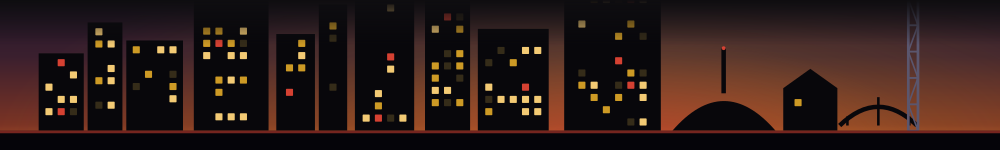

43rd Annual A Country Christmas Lighting Ceremony
Gaylord Opryland Resort & Convention Center, Opryland
The resort's annual lighting ceremony kicks off its holiday season. It's a single evening, and the listing shows 72+ people interested.

Every week the machine watches far more of Nashville than lands in Friday's email. This is a peek at that wider pool: the time-limited windows we are tracking right now, before the week gets narrowed to the picks. Verified entries only -- if we cannot stand behind it, it is not here, and we never guess a close date.
The resort's annual lighting ceremony kicks off its holiday season. It's a single evening, and the listing shows 72+ people interested.
A one-off candlelit Spanish guitar show at TPAC. Single listing, no price in the text.
Decades of honky tonk delivered inside the Mother Church of Country Music. Two nights only, so this is the window.
Free flu shots in the park for three hours on Thursday morning. No price to worry about, only the window.
Opening of a new gallery exhibit paired with a discussion, held over a lunch hour.
A one-night pairing dinner built around Joe Wagner wines. Sales are marked as ending soon, so this one will not wait around.
One-night arena show listed at 7:30 PM. The calendar does not mention tickets or prices, so check before you plan around it.
A two-hour herb sale in the park over Thursday lunch. Small and quick, so walk over before it packs up.
A soundcheck session with the Jonas Brothers in a Printers Alley venue, which is a one-evening look at the band before the real show. The text gives...
A gardening class on building festive winter containers, held at the estate grounds. Useful if your porch needs help before the holidays.
One Friday night at the arena for Dave Matthews Band, with no second show listed.
A two-hour evening hike by lantern light on the sanctuary grounds, one of the few fall nights this is offered.
A three-hour evening art crawl in Franklin, handy for a first-Friday style wander with no fixed seat to book.
A one-night comedy show at the Ryman on Friday. Listed as a single 7 PM performance.
Second installment of a Friday night party at The Cowan. Free entry.
You make the pasta, then you eat lunch. A two-hour midday class, which is a reasonable excuse to leave the desk on a Friday.
A western swing night built for bootscootin. Wear shoes you are willing to scuff.
Jim Lang and The PS 118 AllStars play the show's music with special guest Craig Bartlett. Two sets on one night.
A drag show built around the Grateful Dead catalog. A tie-dye-meets-sequins one-off.
Edible Nashville's seasonal farm dinner runs two nights, with tickets on sale now through Eventbrite. The text gives no menu, location or price, so...
A one-day open house at the railway museum, 9 AM to 3 PM. Worth a look if trains are your thing.
A daytime tribute to the Detroit techno pioneer, running most of a Saturday at the museum.
A two-hour hooping pop-up in the park, one Saturday afternoon only.
A karaoke night benefitting JTM PTO, now in its second year. One evening of singing for a school cause.
This is the watch-list, not the newsletter. Friday's email is the narrowed, curated read -- the week's here-then-gone Nashville windows worth your time, in your inbox before they close. Free.
Get Friday's list, free →This page does not ping you and does not track what you click. It is a pull surface on purpose -- no alerts, no notifications. The way to stop finding out a day too late is the Thursday list.
Everything here is real and every close date is its own stated date, read from the Fleeting. discovery crawl and shown with its source link. Unconfirmed windows are held off the radar entirely, and dates that do not read cleanly are shown as "on watch" rather than guessed. Want the narrowed daily read instead? See the conditions board, look one up on Still On?, or place them on the map.